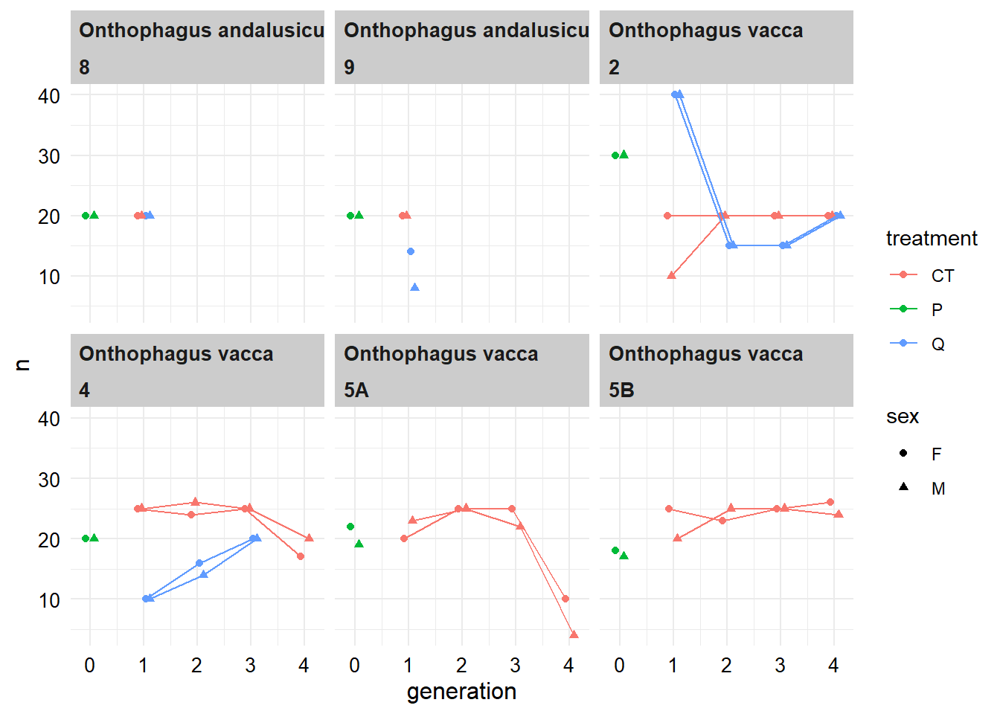
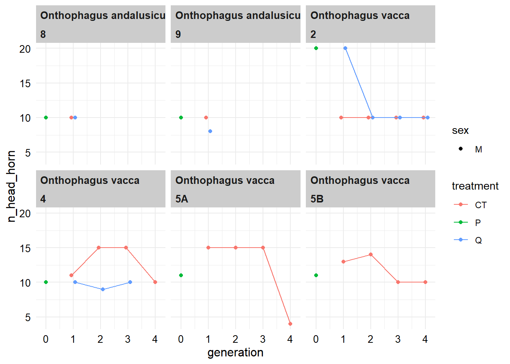
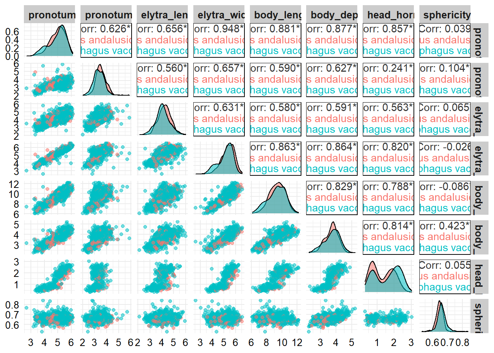
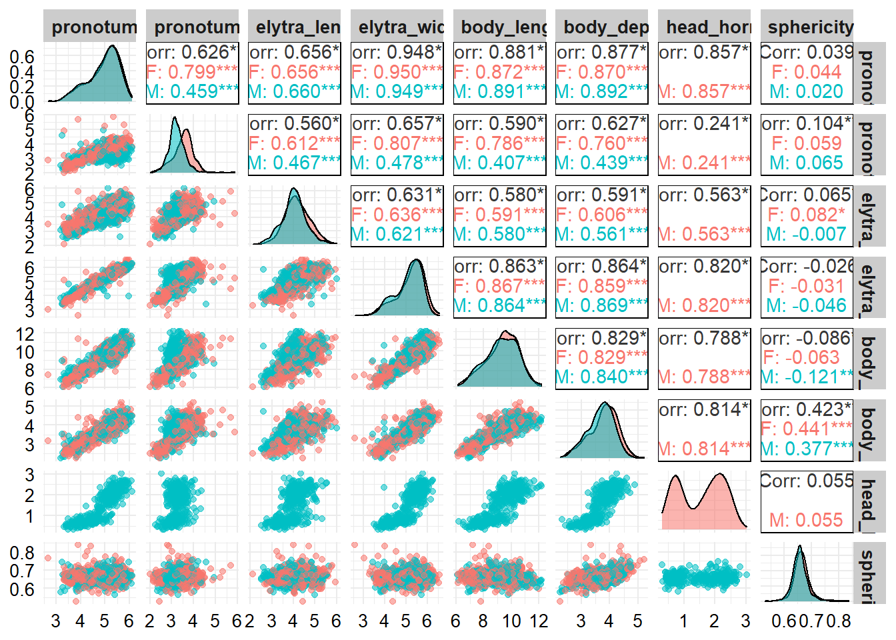
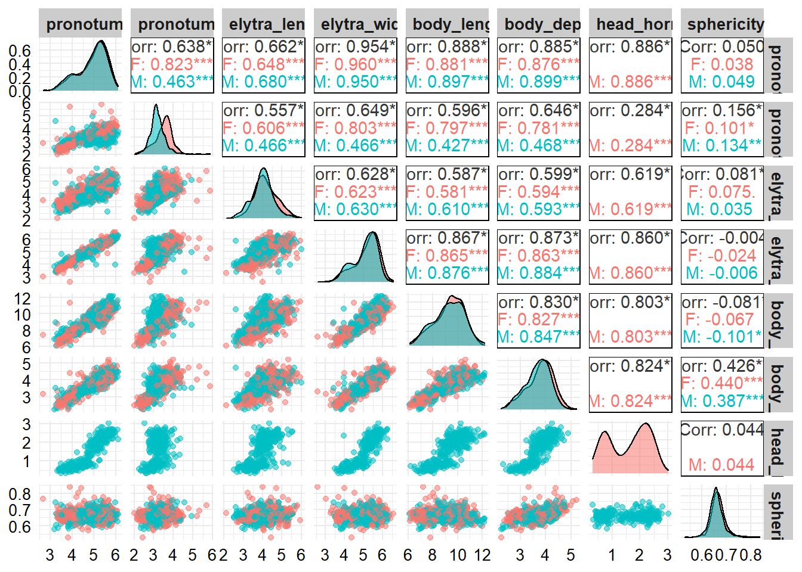
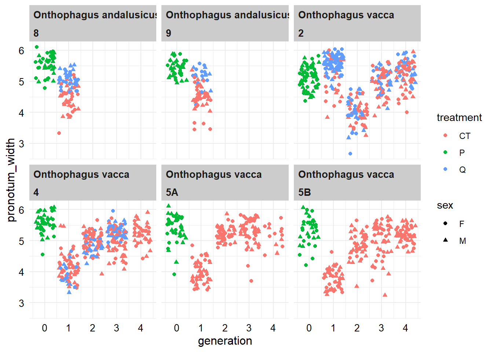

Data exploration
Setup
As before we need to load the packages we will use.
We will also set the ggplot theme for all plots.
theme_set(theme_minimal())
theme_update(strip.text = element_text(face = "bold", size=10, hjust=0),
strip.background = element_rect(fill = "grey80", colour = NA),
axis.text = element_text(size=10, colour = "black"),
axis.title = element_text(size=12, colour = "black"))Load and view the data
Now let’s load and inspect our clean data file.
# Read in the data
db_data <- read_csv("data/db_data.csv")
# Look at the data (in RStudio you could use View(db_data))
db_dataFrom the data frame we can see that we have 1352 observations.
That’s helpful, but we would really like to know how many observations per species/shipment/generation/sex combination.
Given that not all individuals could have each trait measured, it may also be helpful to look at this information, particularly for horns given that this is the trait with the least measurements.
Sample size information
# Total individuals in each species/sex/generation/shipment/generation
# combination
total_n <-
db_data %>%
group_by(species, sex, generation, shipment, treatment) %>%
count()
total_nI find it difficult to get a quick overview of this information from a table. Plotting it in a figure can help.
ggplot(data = total_n, aes(x = generation, y = n, colour = treatment, shape = sex)) +
geom_point(position = position_dodge(0.3)) +
geom_line(position = position_dodge(0.3)) +
facet_wrap(~species*shipment)
It’s a little more convoluted to get the the sample sizes separately for each trait.
# In total
total_n_by_trait <-
db_data %>%
pivot_longer(pronotum_width:head_horn, names_to = "response") %>%
drop_na(value) %>%
group_by(response) %>%
count() %>%
pivot_wider(names_from = response, values_from = n)
total_n_by_trait# For each species/sex/generation/shipment/generation combination
total_n_group_by_trait <-
db_data %>%
pivot_longer(pronotum_width:head_horn, names_to = "response") %>%
drop_na(value) %>%
group_by(species, sex, generation, shipment, treatment, response) %>%
count() %>%
pivot_wider(names_from = response, values_from = n, names_prefix = "n_")
total_n_group_by_traitLet’s visualise the sample size by group for horns
ggplot(data = total_n_group_by_trait %>% drop_na(n_head_horn),
aes(x = generation, y = n_head_horn, colour = treatment, shape = sex)) +
geom_point(position = position_dodge(0.3)) +
geom_line(position = position_dodge(0.3)) +
facet_wrap(~species*shipment)
Pairs plots
I often find it very useful to visualise the correlations among traits. This can be great for detecting outliers, and for getting a better understanding about the distribution of the data.
The following code will produce a series of pairs plots, separated by different groupings.
# Highlight differences between the species
ggpairs(db_data, columns = 8:14, aes(colour = species, alpha = 0.5))
# Highlight differences between the sexes
ggpairs(db_data, columns = 8:14, aes(colour = sex, alpha = 0.5))
# Look at vacca only
ggpairs(db_data %>% filter(species == "Onthophagus vacca"),
columns = 8:14, aes(colour = sex, alpha = 0.5))
# Look at andalusicus only
ggpairs(db_data %>% filter(species == "Onthophagus andalusicus"),
columns = 8:14, aes(colour = sex, alpha = 0.5))Prepare for modelling
In my view, it can be very helpful to plot the data to show the relationships that we are predicting to detect.
It’s important not to go on a fishing expedition here but instead focus on investigating our hypotheses.
For example, we are interested in how body size (pronotum width) was affected by the beetles being within/out of quarantine, and how this may have changed over the generations.
ggplot(data = db_data, aes(x = generation, y = pronotum_width, colour = treatment, shape = sex)) +
geom_jitter() +
facet_wrap(~species*shipment)
Think about what this figure is showing us. Does each ‘shipment’ show a similar or different pattern? Can we test for a treatment effect over the generations using all shipments?
Now that we’ve gotten more familiar with our data - let’s get modelling!